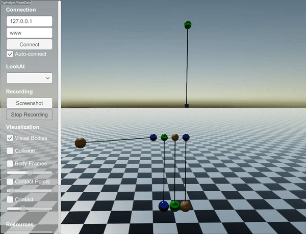

CompliantLengthConstraint
CompliantLengthConstraint is computed as a pair of external forces.
To simulate a spring attached to a robot joint, you can define it directly in the URDF file.
That way, more accurate integration schemes can be used.
However, to simulate a compliant constraint between two objects (including articulated systems), CompliantLengthConstraint is required.
To use this constraint, make sure that you set the time step sufficiently small (much smaller than the natural period of the system).
This constraint also offers three stretch types. For details of the stretch types, please check StiffLengthConstraint.
A compliant constraint can be added as follows:
auto pin5 = world.addSphere(0.1, 0.8);
pin5->setPosition(0.9, 0.0, 6.0);
pin5->setBodyType(raisim::BodyType::STATIC);
auto box = world.addBox(.1, .1, .1, 1);
box->setPosition(0.9, 0.0, 4.0);
auto wire5 = world.addCompliantWire(pin5, 0, {0,0,0}, box, 0, {0., 0, 0}, 2.0, 200);
The following code results in:

API
Class Reference
-
class CompliantLengthConstraint : public raisim::LengthConstraint